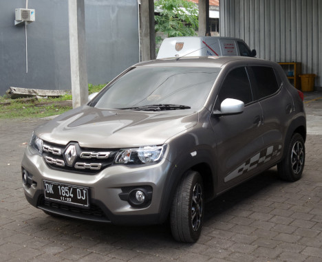
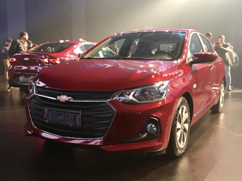
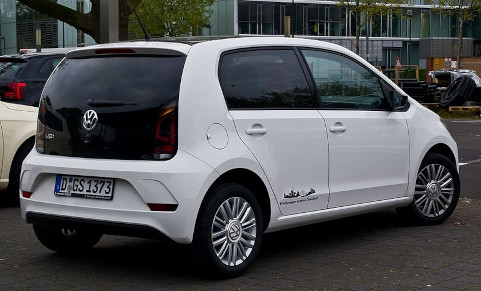
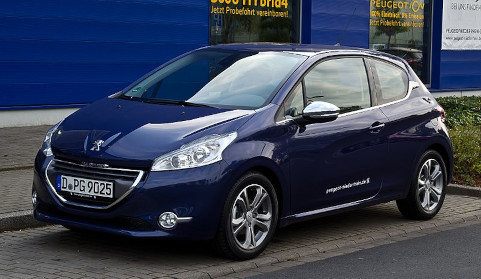
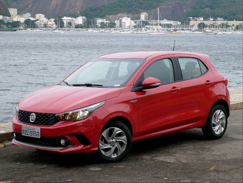
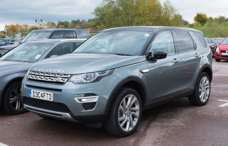
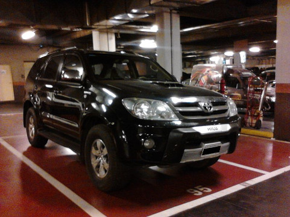
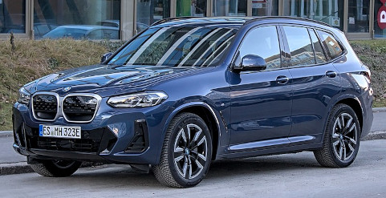

Com a alta dos combustíveis, é interessante para a população saber quais são os carros que menos consomem, certo? Por isso, aqui estão os carros mais econômicos do mercado neste ano de 2022.
Kwid

Onix

Mas qual o consumo desses dois carros?
Kwid
O consumo do Kwid é de 10,3 km/l (etanol) e 14,9 km/l (gasolina) na cidade. Já na estrada o carro da Renault faz 10,8 km/l (etanol) e 15,6 km/l (gasolina).
Onix
Já o consumo do Onix é de 9,9 km/l (etanol) e 13,9 km/l (gasolina) na cidade. Na estrada o carro da Chevrolet faz 11,7 km/l (etanol) e 16,7 km/l (gasolina).
Outras opções de carros econômicos, por ordem:
Up! (Volkswagen)

208 (Peugeot)

Argo (Fiat)

Em contrapartida, separamos também carros chamados de ''beberrões''.
Discovery (Land Rover)

SW4 (Toyota)

X3 M40i (BMW)

Caso queira saber mais sobre esses carros, aqui fica uma sugestão de três sites de busca: